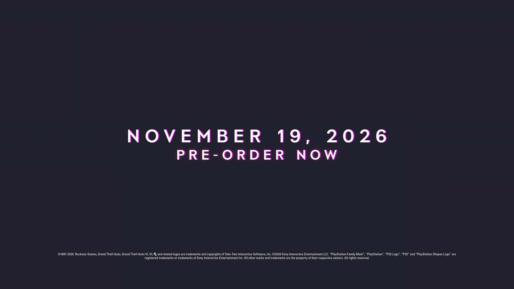

Миф: GTA 6 снова перенесут, Rockstar всегда переносит
Обновлено:

- GTA 6 переносили дважды: 2 мая 2025 и 6 ноября 2025 года.
- Последний перенос был объявлен за 378 дней до новой даты.
- GTA V и RDR2 тоже переносили, но последний раз — за 229 и 267 дней до релиза.
- Идёт полный маркетинг: предзаказы, «Расширенный показ», обложка Game Informer.
Миф
Правда: Rockstar действительно часто переносит игры, но не в последний момент. Все переносы GTA V, RDR2 и GTA 6 объявлялись больше чем за полгода до новой даты.
Шутка «GTA 6 выйдет, когда выйдет» появилась не на пустом месте: игру ждали 13 лет после GTA V, и дату дважды сдвигали. Поэтому каждый слух о переносе разлетается мгновенно. Посмотрим на факты, а не на ощущения.
Как Rockstar переносит игры
| Игра | Перенос объявлен | Новая дата | Дней до релиза |
|---|---|---|---|
| GTA V | 31 января 2013 | 17 сентября 2013 | 229 |
| RDR2 (1-й) | Май 2017 | «Весна 2018» | — |
| RDR2 (2-й) | 1 февраля 2018 | 26 октября 2018 | 267 |
| GTA 6 (1-й) | 2 мая 2025 | 26 мая 2026 | 389 |
| GTA 6 (2-й) | 6 ноября 2025 | 19 ноября 2026 | 378 |
Закономерность видна сразу: Rockstar переносит игры заранее, когда до релиза ещё больше полугода. Объявив точный день, студия дату держала. Так было с GTA V (17 сентября 2013) и с RDR2 (26 октября 2018). У GTA 6 точный день 19 ноября назван почти год назад.
«Эти дополнительные месяцы позволят нам закончить игру с тем уровнем качества, которого вы ждёте и заслуживаете».
Rockstar Games, объявление переноса, 6 ноября 2025
Признаки, что дата держится
- Предзаказы открыты с 25 июня 2026 года (Издания и цены GTA 6: Standard и Ultimate). Перенос после предзаказов — это возвраты денег миллионам людей.
- Маркетинг идёт полным ходом: 27 августа вышел «Расширенный показ» («Расширенный показ» GTA 6: что показали за 26 минут — с таймкодами), сегодня обложка Game Informer.
- Take-Two повторяет дату. Штраус Зельник в феврале 2026 года объяснил, почему уверен: «Чем ближе к маркетинговым этапам, тем выше уверенность — она сейчас максимально высокая».
- Дата предзагрузки уже известна: 12 ноября (Отсчёт до GTA 6 в вашем часовом поясе).
Самая долгая дата в истории GTA 6 была первой, «2025 год»: она продержалась 515 дней. Дата «26 мая 2026» прожила всего 188 дней. А нынешнее 19 ноября держится уже больше 320 дней и пережило все отчёты Take-Two перед акционерами. Считали по датам объявлений.
Правда
🔴 Скорее миф. Гарантий не даёт никто, и мы тоже не будем. Но по истории Rockstar переносы объявляют за 7–13 месяцев до даты, а не за 51 день. Открытые предзаказы, полный маркетинг и названная дата предзагрузки — всё это работает против третьего переноса. Если что-то изменится, эта страница обновится первой. Другие мифы — 10 мифов о GTA 6 и Миф: GTA 6 соберёт все награды «Игра года» в 2026.
Источники: Rockstar Games (объявления 02.05.2025 и 06.11.2025); TechRadar (06.11.2025); AOL / Take-Two (Штраус Зельник, 04.02.2026); SixWiki (история переносов GTA V и RDR2).